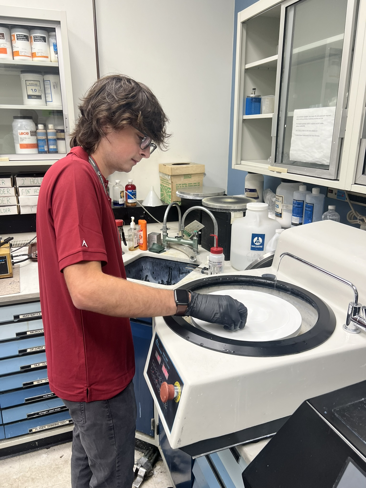
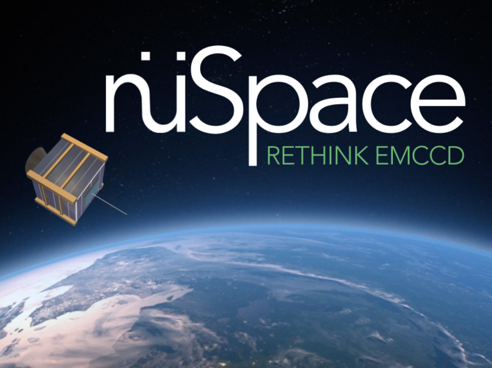

I am broadly interested in understanding how aerospace materials behave at the critical interfaces that determine their performance. Whether its particles impacting a substrate at supersonic speeds, polymers diffusing into one another, or ultrasonic waves probing a material for defects, my work centers on how to predict and control what happens at material interfaces.
My PhD research investigates solid-state additive manufacturing through cold spray. My work centers on how processing parameters govern bonding mechanisms and interfacial quality across different material systems. Across all of them, the same underlying mechanisms play out at interfaces that are difficult to observe and hard to predict. Long term, I'm interested in applying data visualization and machine learning to materials characterization by using in-situ sensor data to predict process-structure-property relationships without destructive testing.
Since starting my PhD, I've been investigating cold spray as a platform for depositing functional coatings across a range of material systems, things like metal coatings on carbon fiber composites or metallized polymer structures. The work combines solid-state additive manufacturing, interfacial mechanics, and materials characterization, to work towards an understanding of interfacial bonding mechanisms.
Stay tuned for significant research milestones and updates!
During my third internship at NASA Langley, I was able to lead my own research thrusts. On the OATMEAL (Out-of-autoclave Amorphous/Crystalline Thermoplastic Materials for Energy-Efficient Aerospace-Grade Laminates) project, I ran polymer diffusion experiments using spatial FT-IR spectroscopy to quantify how PEI diffuses into PEEK across different temperatures and times. The process involved heating and quenching polymer films, mounting and polishing cross-sections, then collecting FT-IR data.
The other half of my work focused on surface laser ablation. By varying laser power I measured material removal depth using laser confocal topology mapping and mass measurements. Putting this into a Bayesian optimization framework using Gaussian processes enabled cavity depth predictions from laser parameters.
Big thanks to Dr. Tyler Hudson, Joseph Kirchhoff, Wil, and Bert for bringing onto the OATeam!
My second internship at Langley was on the TTT (Transformational Tools and Technologies) project where I worked on ultrasonic NDE (nondestructive evaluation) on carbon fiber composites. During autoclave cure of bonded composite joints, you don't know what's happening at the bondline. I used in-situ ultrasonic sensors to measure bondline thickness in real time and built MATLAB GUIs for live analysis of the data. The second half of this project was applying machine learning to make these measurements more accurate. This was my first time applying ML to a tangible problem, training SVMs and Gaussian process regression models that improved predictions by 15%. This work resulted in a co-authored paper in Applied Composite Materials.
Alongside the bondline work, I also contributed to in-situ ultrasonic analysis of a tow-steered composite panel. I helped correlate ultrasonic C-scans to cure cycle parameters like temperature, pressure, and Tg to monitor defects introduced during AFP (automated fiber placement) layup. Check out this co-authored paper in Journal of Nondestructive Evaluation.
Shout out to my mentor Dr. Tyler Hudson, officemate Nick, and Joseph, Wil, and Henry for a great summer research group!
During my first internship at NASA Langley, I joined a brand new materials project. SUMAC (Sustainable Manufacturing of AirCraft) was looking to investigate using bio-derived resins and flax fibers for aerospace composite structures. My job was to actually try to demonstrate this idea.
I synthesized polyvinyl alcohol (PVA) hydrogels from scratch as a simple resin to test a flax fiber composite. Working with a new material system, a lot of the work was troubleshooting. I iterated through composite layups, tested different processing methods, and machined coupons to run mechanical testing. Trying to figure out why consolidation was failing, why resin was bleeding out, and why specimens weren't behaving as expected was a great intro to composite materials. I also learned thermal testing techniques like TGA and DSC, exposing me to the many characterization possibilities in materials.
I'm extremely grateful to Dr. Chris Wohl for his mentorship. It was my first real exposure to materials characterization and composite fabrication, and it set the foundation for everything I've done since.
My first real taste of research and systems engineering came from the Hume Center for National Security at Virginia Tech. I joined a team led by Dr. Leon Harding working with the Canadian Space Agency designing a 6U CubeSat around a first-of-its-kind Electron Multiplying CCD (EMCCD) payload. An EMCCD is an imaging sensor typically used for ground-based telescopes, not in small sats. I led the design and integration of the power subsystems. Starting from scratch I built out the full power system, iterating through power budgets, running trade studies, and making sure everything would integrate together. I presented the power system design at the Hume Center Colloquium, which was my first time presenting research to an audience beyond my advisors. This experience is really what convinced me I wanted to keep doing research.
